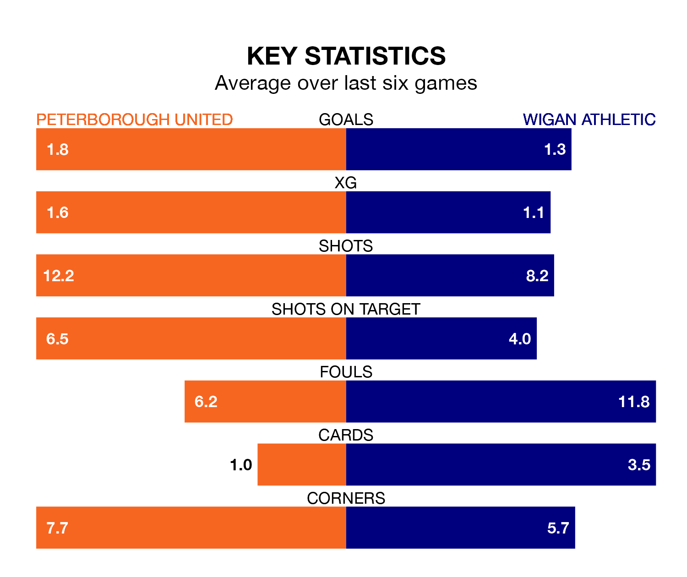

Peterborough United are heavy favourites to keep all three points at home in Saturday's kick-off against Wigan Athletic.
The Posh, who sit third in EFL League One with 28 games played, are priced at 1.5 to seal victory at the Weston Homes Stadium.
Sitting six places and 14 points behind them in the table, Wigan are 5.3 to win with *Betting Company*, while the draw is at 4.0.
With 54 goals in 28 games so far this season, Peterborough are the league's highest scorers with 1.9 goals per game. And they are conceding fewer than average, letting in 29 goals at a rate of 1.0 per game.
Wigan are also above average scorers, with 1.4 goals per game, compared to a league average of 1.3. They have conceded 1.2 goals per game.
In the last 10 years, Peterborough and Wigan have played each other on seven occasions. Peterborough won three of them, Wigan two, and they drew twice.
On average, the Posh scored 1.4 goals and the Latics 1.3 in those matches.
Their last meeting was on November 7, when Wigan won 2-1 at home.
With Nicholas Bilokapic between the sticks, United can rely on one of the league's safest pair of hands. He has kept 10 clean sheets in his 24 appearances this season in EFL League One.
In Athletic's net, Sam Tickle has nine clean sheets in 29 games. He has conceded a goal every 82 minutes, 20% more often than the 95 minutes between goals for Bilokapic.
The Posh are in reasonable form in EFL League One, with three wins and three draws from their last six games.
With three wins and two draws over that period, the Latics' form is slightly worse – they have taken 11 points from 18, compared to the home team's 12.
Peterborough's last match was on January 27, a 0-0 draw against Lincoln City.
Wigan lost 3-2 against Stevenage last time out, also on January 27, with Josh Magennis and Thelo Aasgaard on the scoresheet.
Updated: 10:03 (UTC), 30/01/24